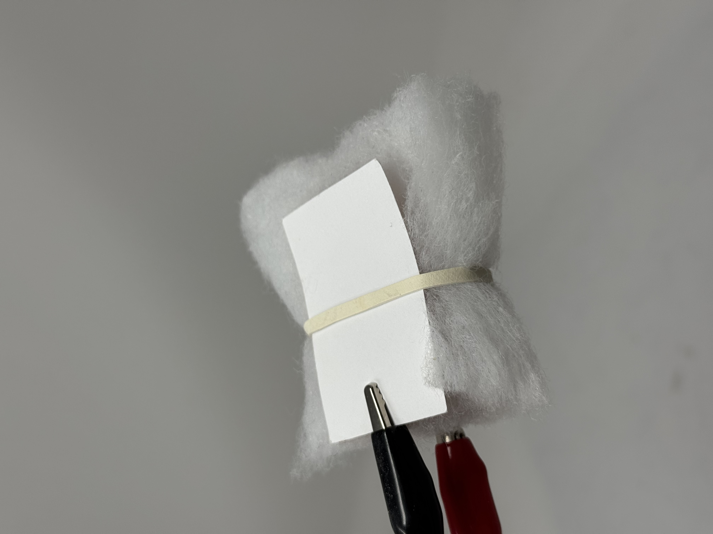
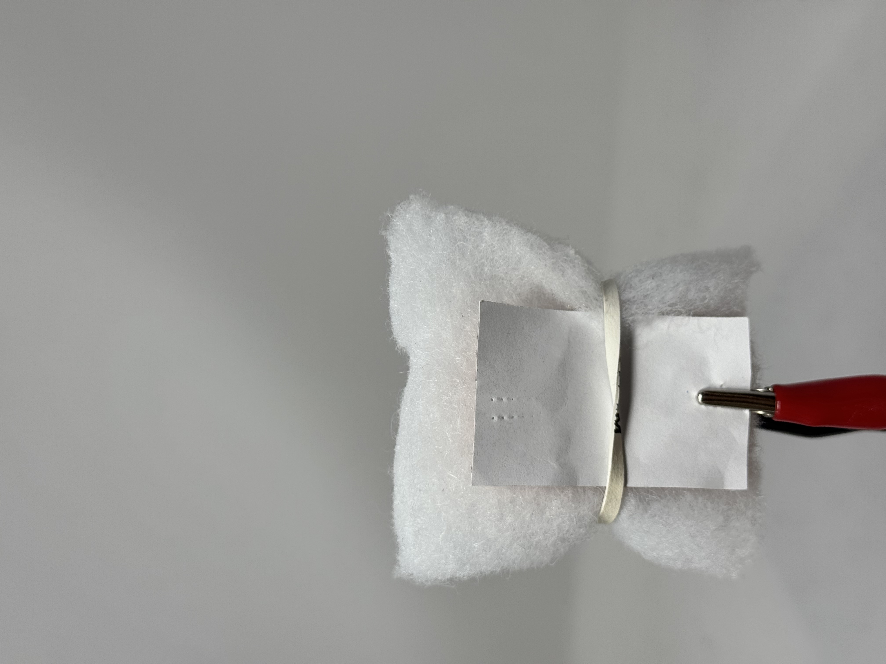
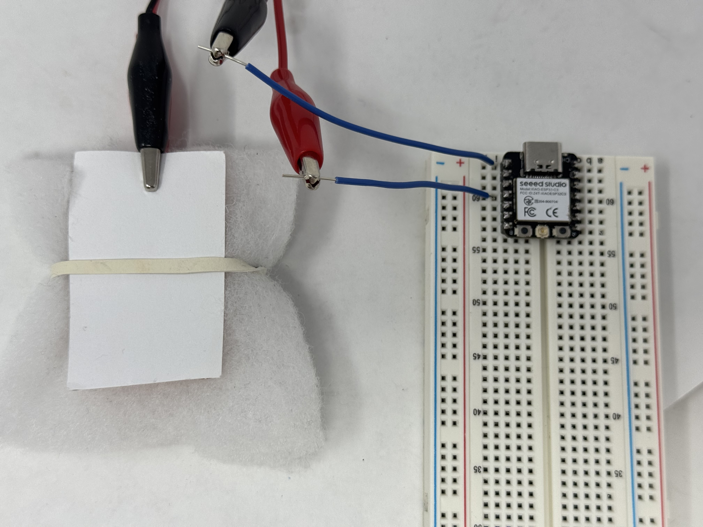
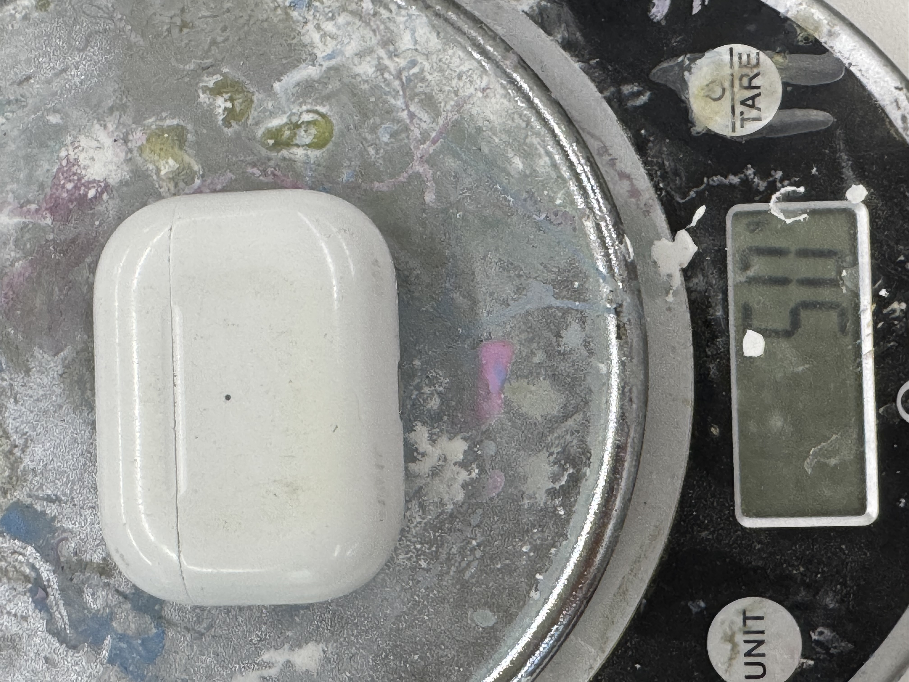
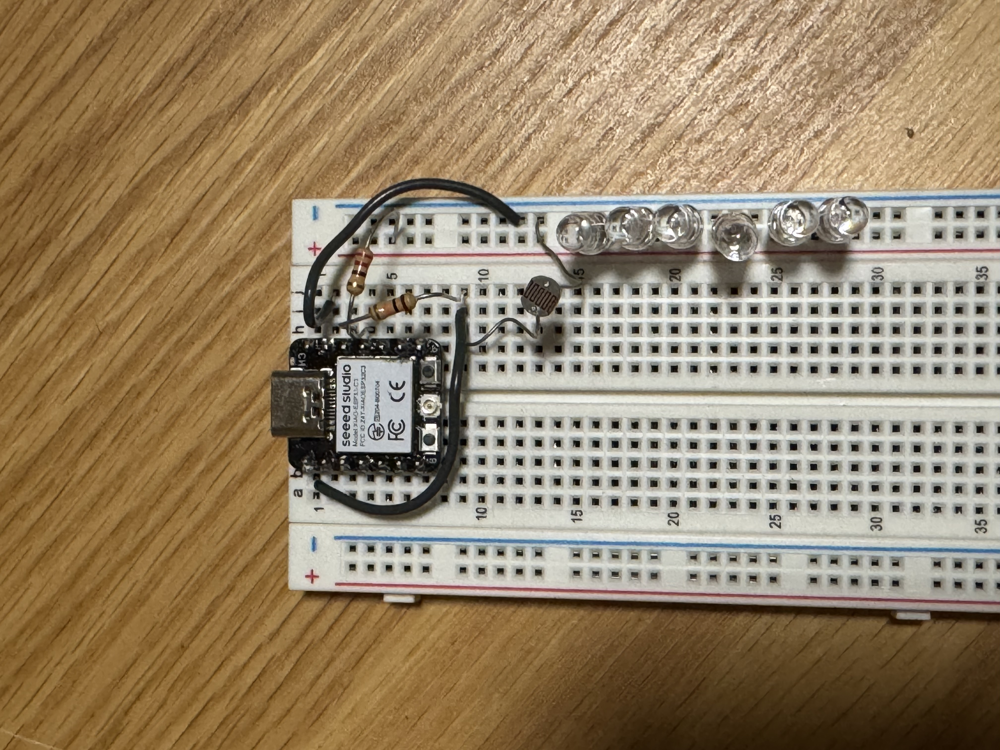
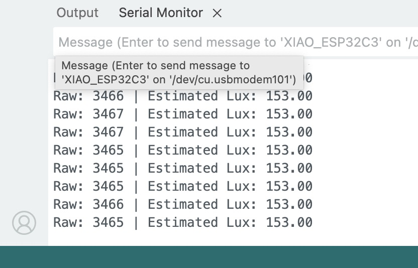
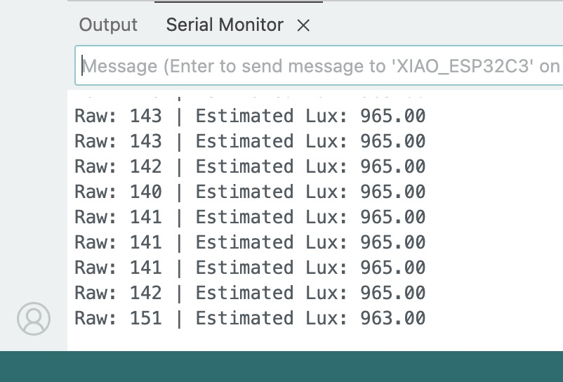
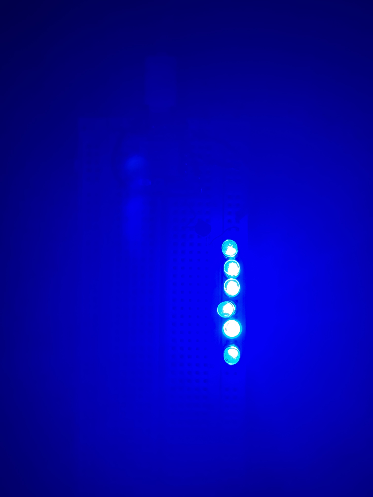
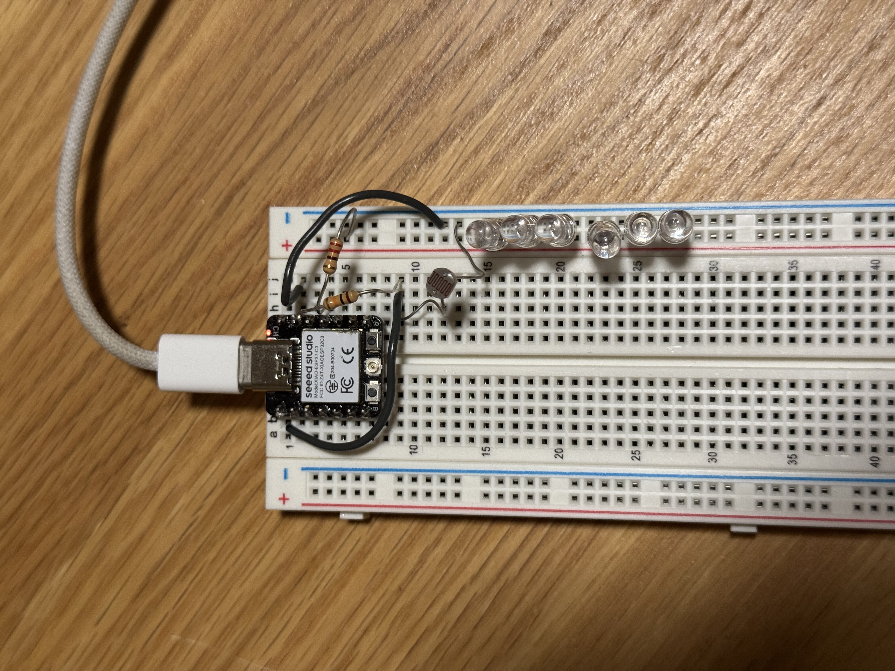

Week 06 · Inputs
Sensors: Pressure and Light
Two builds: a foam-and-copper capacitive pressure sensor, and a light sensor that flips an LED based on lux.
Assignment 1: Capacitive Sensor with Foam and Copper
For this project, I built a basic capacitive pressure sensor using a block of foam and two copper sheets. When weight is applied, the foam compresses slightly, changing the capacitance between the copper plates. The sensor is connected to the XIAO microcontroller and outputs values based on how much pressure is applied.
Step 1: Building the sensor
I placed a block of soft foam between two small copper sheets. One sheet was connected to pin D0 (analog), and the other to D3 (as the TX pin). When weight is added on top, the foam compresses, changing the capacitance and giving different readings.
- Top copper sheet — D0
- Bottom copper sheet — D3



Step 2: Initial code
This is the uncalibrated code which I got from the S-12 website, it reads the difference between the high and low analog values caused by charging/discharging through the copper sheets. The raw result changes depending on pressure.
long result;
int analog_pin = A3;
int tx_pin = 4;
void setup() {
pinMode(tx_pin, OUTPUT);
Serial.begin(9600);
}
void loop() {
result = tx_rx();
Serial.println(result);
}
long tx_rx() {
int read_high, read_low, diff;
long sum = 0;
int N_samples = 100;
for (int i = 0; i < N_samples; i++) {
digitalWrite(tx_pin, HIGH);
read_high = analogRead(analog_pin);
delayMicroseconds(100);
digitalWrite(tx_pin, LOW);
read_low = analogRead(analog_pin);
diff = read_high - read_low;
sum += diff;
}
return sum;
}
Step 3: Calibration
To calibrate, I placed weights on the sensor and recorded the readings:
| Weight (g) | Sensor Value |
|---|---|
| 0g | 60,000 |
| 20g | 72,000 |
| 60g | 85,000 |
| 100g | 86,000 |
| 140g | 90,000 |
| 200g | 95,000 |
| 300g | 103,000 |
| 500g | 110,000 |
| 800g | 126,000 |
Then I used a simple function to estimate weight based on the sensor value, this gave rough weight results.
Step 4: Updated code with weight estimation
I added a function to convert the sensor reading into grams using a linear range from 60k to 140k, at first I mapped it to 0g-1000g, but the weight readings were overestimated and inaccurate. After testing I mapped it to 0g to 500g, which showed greater accuracy.
long result;
int analog_pin = A3;
int tx_pin = 4;
void setup() {
pinMode(tx_pin, OUTPUT);
Serial.begin(9600);
}
void loop() {
result = tx_rx();
float weight = estimateWeight(result);
Serial.print("Reading: ");
Serial.print(result);
Serial.print(" | Est. Weight (g): ");
Serial.println(weight);
}
float estimateWeight(long reading) {
if (reading <= 60000) return 0;
if (reading >= 140000) return 500;
return map(reading, 60000, 140000, 0, 500);
}
long tx_rx() {
int read_high, read_low, diff;
long sum = 0;
int N_samples = 100;
for (int i = 0; i < N_samples; i++) {
digitalWrite(tx_pin, HIGH);
read_high = analogRead(analog_pin);
delayMicroseconds(100);
digitalWrite(tx_pin, LOW);
read_low = analogRead(analog_pin);
diff = read_high - read_low;
sum += diff;
}
return sum;
}
Testing
To test my sensor, I measured the weight of airpods on an actual scale, which got me 50g, then I used my capacitive sensor to measure the weight of the airpods and got about 55g, which is closely accurate for a handmade sensor. This showed the sensor was working and responding to changes in force.


Assignment 2: Light Sensor with LED Control
This project uses a light sensor and an LED controlled by a XIAO microcontroller. The sensor measures light, converts it to lux, and turns the LED on in darkness, and off in light.
Demo
Step 1: Wiring the circuit
I connected the light sensor to analog pin A0 (D0) and the LED to pin D10 with a 1k resistor.
- Light Sensor — A0 (D0)
- LED — D10
- Power and GND wires connected accordingly

Step 2: Writing the code
The code below reads analog values from the light sensor every 100ms, estimates the lux value, and turns the LED on if the light level is below the threshold.
const int sensorPin = D0;
const int ledPin = D10;
unsigned long lastReadTime = 0;
const unsigned long readInterval = 100;
void setup() {
pinMode(ledPin, OUTPUT);
Serial.begin(115200);
}
void loop() {
unsigned long currentTime = millis();
if (currentTime - lastReadTime >= readInterval) {
lastReadTime = currentTime;
int sensorValue = analogRead(sensorPin);
float lux = estimateLux(sensorValue);
Serial.print("Raw: ");
Serial.print(sensorValue);
Serial.print(" | Estimated Lux: ");
Serial.println(lux);
if (lux < 100) {
digitalWrite(ledPin, HIGH);
} else {
digitalWrite(ledPin, LOW);
}
}
}
float estimateLux(int analogVal) {
int inverted = 4095 - analogVal;
float lux = map(inverted, 0, 4095, 0, 1000);
return constrain(lux, 0, 1000);
}
Step 3: Calibrating the sensor
To convert analog values to approximate lux values, I used the following method:
- Measured the analog reading under different lighting conditions
- Recorded approximate lux values using known references
- Mapped the readings using a linear function after inverting the sensor value
Example measurements:
| Condition | Analog Value | Approx. Lux |
|---|---|---|
| Direct flashlight | 300 | -900 |
| Room light | 1200 | -154 |
| Shadow | 2500 | -70 |
| Dark room | 3500+ | <10 |
To estimate lux, I tested the sensor under different lighting and recorded the analog readings. Then I inverted the values and mapped them to a 0–1000 lux range using a simple linear function:
int inverted = 4095 - analogVal; float lux = map(inverted, 0, 4095, 0, 1000);
This gives a rough lux value where 0 = dark and 1000 = bright.

Lux in Room Light

Lux Under Flashlight
Step 4: Testing the LED
When the room was dark, the LED turned on as expected. When light was on, it turned off. This matched the lux threshold set in my code.

